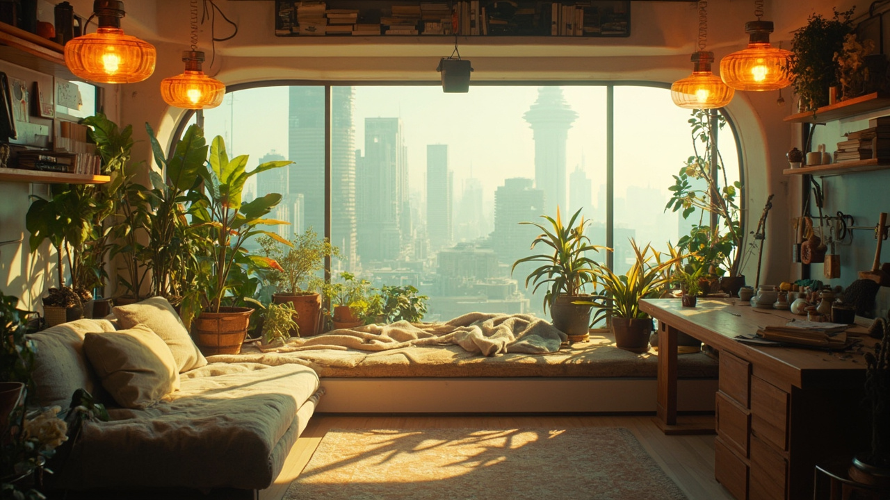
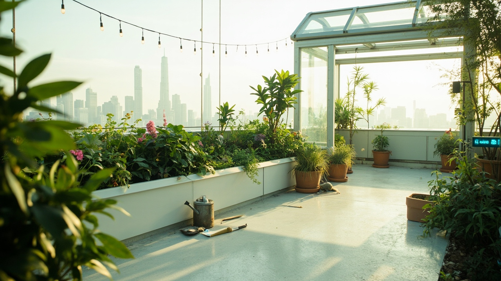
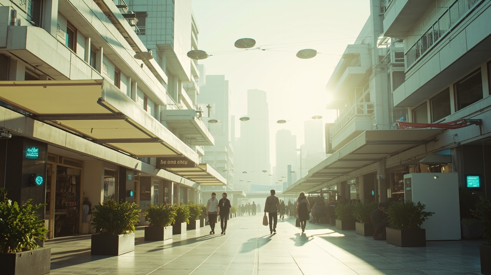

四個場景・概念圖已完成
場景卡

1 / 7 · 家小屋 Hut使用者嘅家／個人節點。TOOLS IN HUT：所有工具放喺屋裏面。概念圖 ✅ · 3D ⏳ · 工具按鈕 ⏳
2 / 7 · 生活／記憶後花園 Garden種嘢、晾衫、放工具、留住記憶；串住資訊流（MONS FEED）。概念圖 ✅ · 3D ⏳ · 工具按鈕 ⏳
3 / 7 · 中繼／交流大街 Street由家走出去嘅第一條街；EXPLORE：你嘅目標、你嘅停留、你要去邊。概念圖 ✅ · 3D ⏳ · 工具按鈕 ⏳ 4 / 7 · 社交／內容咖啡廳 Café坐低傾偈嘅地方；RELOAD CAFE（+ STORE）：連住店舖。概念圖 ✅ · 3D ⏳
4 / 7 · 社交／內容咖啡廳 Café坐低傾偈嘅地方；RELOAD CAFE（+ STORE）：連住店舖。概念圖 ✅ · 3D ⏳